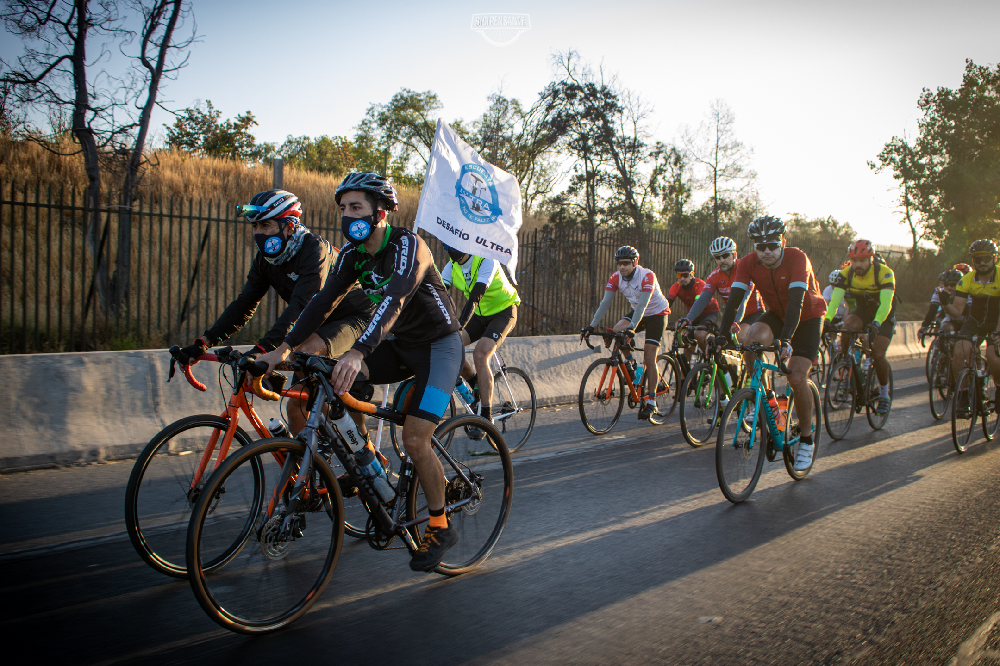
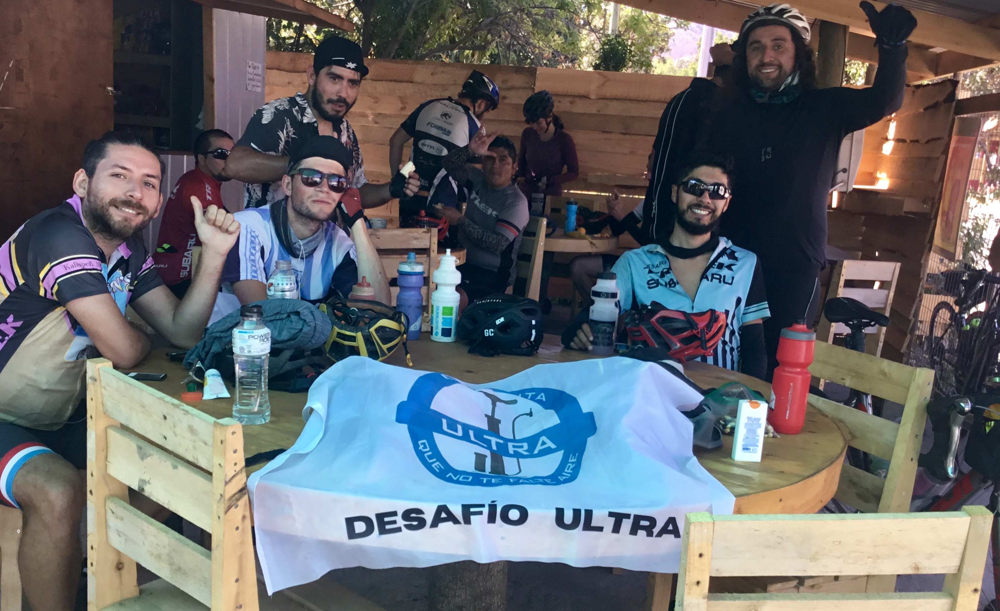
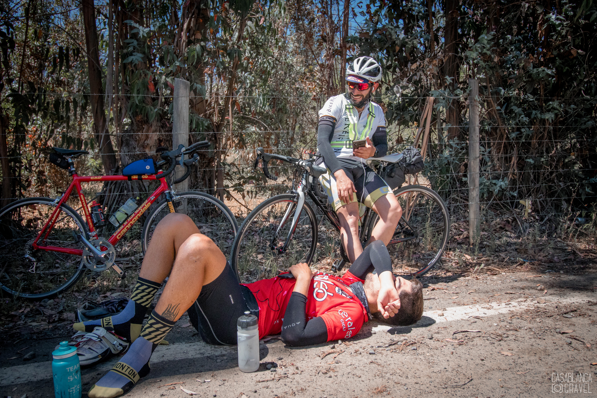
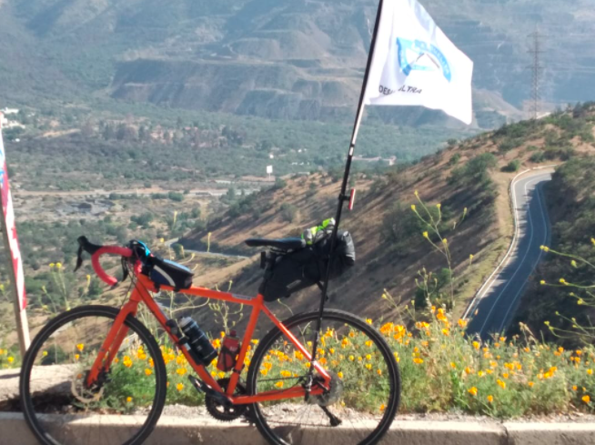
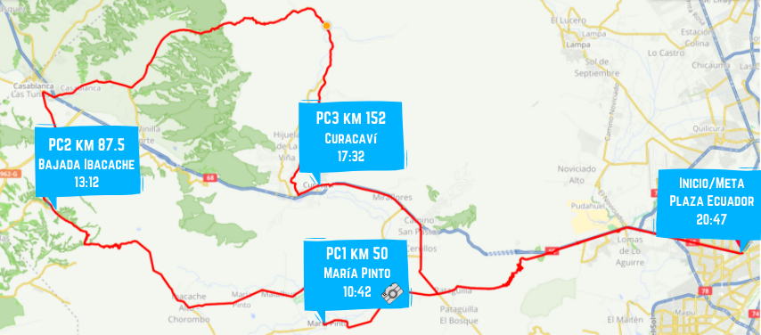
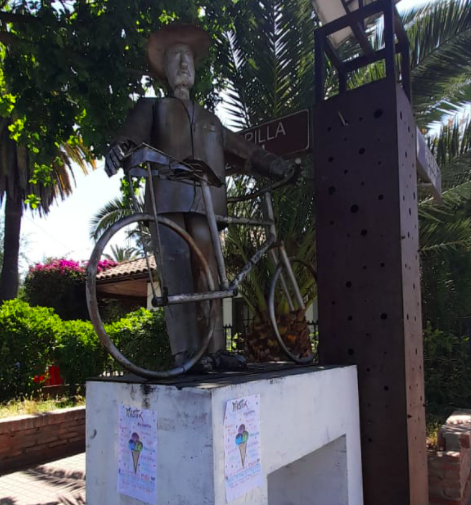
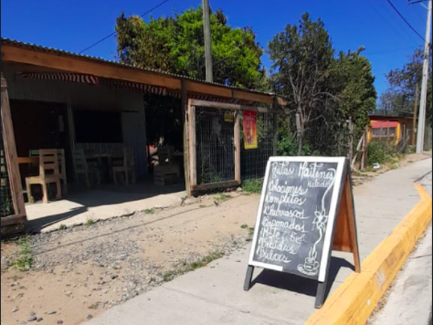
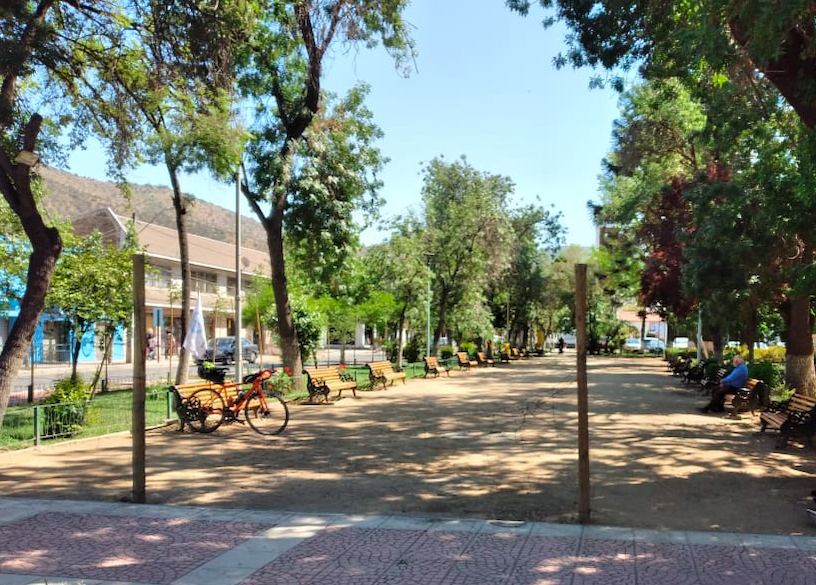

-
Desafío 200 km 3x3
Revisa nuestro instagram para conocer los detalles generales. Pronto más información por este medio.
-
Fase Ultra - Volviendo a la ruta
FOTOS DEL EVENTO
Debajo de cada imagen existen los links a Google Drive donde encontrarás las fotos de Bicipensante, Casablanca Gravel y las del equipo de la Escuelita en distintos lugares de la ruta como la partida, PC1, Ibcacahe, PC2, Tapihue, PC3, Lo Prado ida y vuelta, cruce Pataguilla y meta.
Los tiempos finales de cada participante los puedes encontrar en www.bicineta.cl/fase-ultra.


Ver fotos de Bicipensante ver en Google Drive

Ver fotos de Escuelita ver en Google Drive
Ver fotos de Casablanca Gravel ver en Google DrivePUNTO DE PARTIDA
Desde las 6:15 AM ya podrás retirar tu número para identificarte en los puntos de control para el registro de tus tiempos. Recomendamos llegar anticipadamente para evitar atochamientos innecesarios y partidas tardías. Recuerda traer tu mascarilla.
A las 7:00 AM se da la partida con los primeros kilómetros neutralizados desde la Plaza Av. Ecuador por la ruta 68 a cargo del equipo de la escuelita llevando una bandera al frente del grupo hasta que ya llegando a zona más segura cada quien tomará el ritmo que más le acomode.

Recuerda tu mascarilla para la llegada al punto de partida, el primer tramo neutralizado, los puntos de control y las posibles compras en negocios a lo largo de la ruta.
RUTA Y ALTIMETRÍA

Ve la ruta en detalle en Ride with GPS o Strava
Ve puntos importantes en Google Maps
Descarga los archivos .gpx, .tcx y .kml en Google Drive
PUNTOS DE CONTROL
Contaremos con seguimiento en vivo del paso de los participantes por cada punto de control para que tus amigos y familiares puedan saber a qué hora pasaste por cada PC (pronto el link)
Punto de control Lugar Km Horario ** Inicio Plaza Av. Ecuador 0 06:15 - 07:17 PC1 Estatua ciclista María Pinto *📷 50 08:42 - 10:42 PC2 Bajada Ibacache sector Los Maitenes 87,5 09:46 - 13:12 PC3 Plaza de Curacaví 151,7 12:17 - 17:32 Meta Plaza Av. Ecuador 206 20:47 cierre final Importante: *📷: al llegar a la estatua debes sacarte una foto junto a ella y enviarla al grupo de whatsapp para anotar tu tiempo. El PC2, PC3 y Meta cuentan con equipo de la escuelita y son ellos quienes registrarán la foto y tu tiempo.
** La partida comenzó a las 07:17 por lo cual se actualizaron los horarios de cierre de cada PC y Meta con +17 min.

PC1 KM 50 MARÍA PINTO

Estatua ciclista al doblar en María Pinto hacia el norte. La foto debe ser enviada al grupo de whatsapp al momento de pasar para que quede registrado tu tiempo correctamente. Existen negocios para abastecerse y los próximos kilómetros siguen por ciclovía rumbo a la cuesta Ibacache.
PC2 KM 87.5 BAJADA IBACACHE

Bajando Ibacache en el sector de Los Maitenes se encuentra una fuente de soda a mano derecha donde encontrarás al equipo de la escuelita con una bandera para anotar tu tiempo. Posta rural cercana. Luego sigues hacia Casablanca donde encuentras de todo para comer o para hidratarte y así prepararte para la cuesta más empinada de la ruta. ¡Carga agua!
PC3 KM 151,7 PLAZA CURACAVÍ

Cruzando Curacaví se encuentra la plaza principal a mano izquierda donde contarás con asientos, sombra y negocios para comprar. El equipo de la escuelita te recibirá en el PC con la misma bandera y podrás recuperar energías con agua y fruta para así poder seguir hacia la última cuesta del día volviendo a Santiago por Lo Prado.
META KM 206 PLAZA AV ECUADOR

La meta se encuentra en el mismo lugar del comienzo, en la Plaza Ecuador donde podrán registrar su tiempo final a descansar y celebrar.
LISTA DE INSCRITOS
Revisa los tiempos de cada participante a lo largo de los puntos de control en vivo en
www.bicineta.cl/fase-ultra
Número Nombre 1 Carlos Castillo 2 Paulo Soto 3 Iván Isla 4 Ignacio Ceballos 5 Gurkan Genc 6 Daniel Salas 7 Felipe Rodríguez 8 Juan Muñoz Díaz 9 Ignacio Morales Valdivia 10 Cristian Muñoz 11 Fernando 12 Cristóbal Vera Pino 13 Fernando Morales Sing Long 14 Carlos Vicencio Ordenes 15 Angel Moncada Valenzuela 16 Victor Valderrama 17 Jonathan Guerra Espinoza 18 Marco Sans 19 Rocío Hermosilla Muñoz 20 Belén Aguilera 21 Augusto Oporto Salinas 22 Francesca Pericó Flores 23 Matías More Retamal 24 José Ruiz 25 Javier Bernardo Concha Pacheco 26 Francisco Valenzuela Contreras 27 Nicolás Nanda vittori 28 Pablo César Huenchún Miralles 29 Marco Araya 30 Angel Diaz 31 Tito Nazar 32 Matias Gómez Arriagada 33 Carlos Tapia Sánchez 34 Fabián Reyes 35 Ignacio Gaete 36 Pablo Cepeda 37 Nelson Vilches Elgueta 38 Juan Pablo Mancilla Saldaña 39 Mariela Scott 40 Mariana Ayala 41 Trivikrama Das 42 Bairon Pilquinao 43 Mónica González 44 Wladimir Alfaro 45 Traccion humana 46 Sebastián Vásquez 47 Carlos Carvajal 48 Cristian Gonzalez Poblete 49 Roberto Rojas 50 Rodrigo Rojo 51 Fidel Arias 52 Maximiliano Ulloa 53 Ivan Valenzuela 54 Joaquin Guerra Saintard 55 Emilio Freire 56 Alejandro Gonzalez Leon 57 Joaquin Ibañez 58 Sebastián Urrestarazu González 59 Sebastián Cerón 60 Rodrigo Troncoso 61 Franco Alegria 62 Felipe Roco Figueroa 63 Celso Lobos 64 Cristian Bascuñan Darat 65 Juan Jimenez Gonzalez 66 José Carmona Navarrete 67 Danilo Riquelme 68 Felix Riquelme 69 Jose Avila 70 Christian Andrés González 71 Sixto Valdebenito Sepulveda 72 Héctor Andrés 73 Francisco Castro 74 Mauro Salinas 75 Daniel Cornejo Muñoz 76 Mauricio Rojas 77 José Acuña Zambra 78 Diego Castro Todo participante entiende las responsabilidades mínimas básicas de participar en un evento de este tipo acorde al Documento de exención de responsabilidades
{kind=link}
{kind=link}
{kind=link}
{kind=link}
{kind=link}
{kind=link}
{kind=link}
{kind=link}